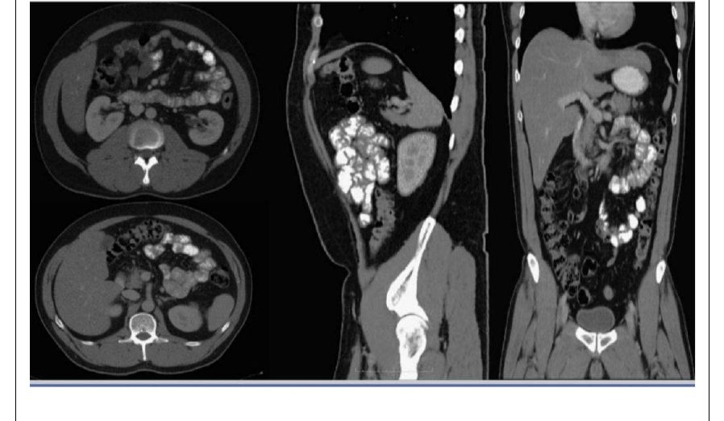
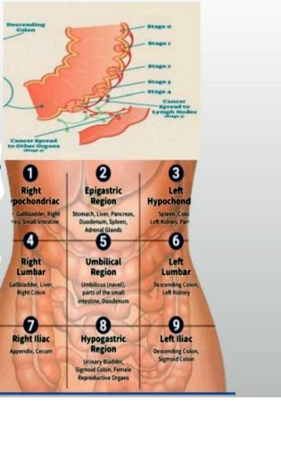
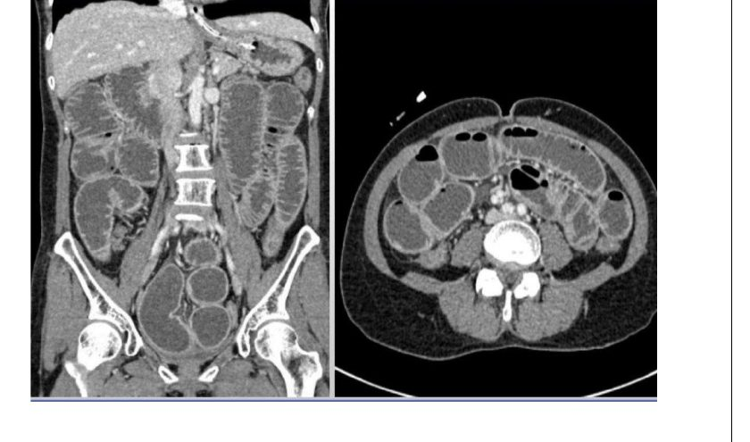
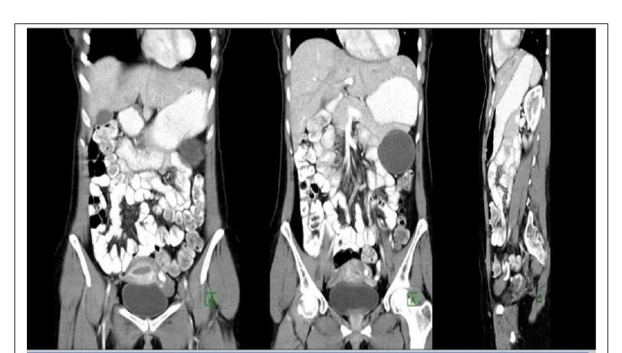
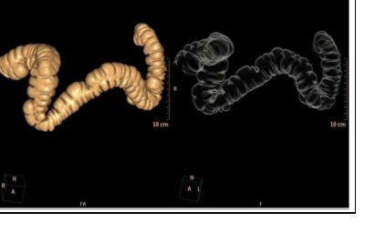

المفراس للجهاز الهضميLecture 7: Computed tomography of the GI tract
نظري · م07 · 9.3 دقيقةأقسام المحاضرة (9)
- دواعي المفراس للجهاز الهضميIndications of CT of the GI tract
- عوامل التباين داخل التجويف: الفموي الموجب والسالبIntraluminal contrast agents: positive and negative oral contrast
- الحليب كامل الدسم والعوامل التناضحية والتباين الوريديFull-fat milk, osmotic agents and intravenous contrast
- تقنية الفحص والنهج متعدد الأطوارTechnique and multiphasic approach
- تصوير القولون بالمفراسCT colonography
- دواعي تصوير القولون وموانعه وتحضير الأمعاءIndications, contraindications and bowel preparation of CT colonography
- تقنية تصوير القولون وجمع البياناتCT colonography technique and data acquisition
- المزايا والعيوب والموجوداتAdvantages, disadvantages and findings
- المضاعفات والرعاية اللاحقةComplications and aftercare
دواعي المفراس للجهاز الهضميIndications of CT of the GI tract

الدواعيIndications:
- 1. Abdominal mass.كتلة في البطن.
- 2. Suspected tumour and tumour staging.اشتباه وجود ورم وتحديد مرحلته.
- 3. Appendicitis: focused appendiceal CT (FACT)التهاب الزائدة الدودية: التصوير المقطعي المحوسب المركّز على الزائدة (FACT).
- 4. Acute abdomen.البطن الحاد.
- 5. Altered bowel habit in the elderly.تغيّر عادة التبرّز عند كبار السن.
- 6. Location of bleeding.تحديد موضع النزف.
- 7. Trauma.الرضح (الإصابات).

عوامل التباين داخل التجويف: الفموي الموجب والسالبIntraluminal contrast agents: positive and negative oral contrast
التصوير المقطعي المحوسب للجهاز الهضميCT of the gastrointestinal tract
عوامل التباينContrast Agents
عوامل التباين داخل التجويفIntraluminal contrast Agents:
التباين الفموي الموجبPositive oral contrast:
(e.g. 25 mL Omnipaque300 made up to 1 L with water, low in density to avoid beam hardening artifact)
(مثلاً 25 مل من Omnipaque 300 تُخفَّف بالماء حتى 1 لتر، وكثافتها منخفضة لتجنّب أثر تصلّب الحزمة (beam hardening artifact)).
Indications: abdominal and pelvic CT to delineate the bowel from pathology,
دواعي الاستعمال: التصوير المقطعي للبطن والحوض لتمييز الأمعاء عن الآفات المرضية.
In the small bowel: positive oral contrast is helpful in the postsurgical abdomen, Improving conspicuity of abscess and fistulae and their communications.
في الأمعاء الدقيقة: التباين الفموي الموجب مفيد في البطن بعد الجراحة، إذ يُحسّن وضوح الخراج والناسور واتصالاتهما.
التباين الفموي السالبNegative oral contrast:
The inherent negative properties of intraluminal contents will be sufficient contrast in high-grade intestinal obstruction, with the fluid within the dilated bowel acting as a negative contrast agent and allowing definition of the transition point.
الخصائص السالبة الكامنة في محتويات التجويف تكفي كتباين في الانسداد المعوي عالي الدرجة، إذ يعمل السائل داخل الأمعاء المتوسعة كعامل تباين سالب، ويسمح بتحديد نقطة الانتقال.
The negative imaging properties of a litter of oral water will be sufficient for cancer staging and follow-up.
خصائص التصوير السالبة للتر من الماء الفموي تكفي لتحديد مرحلة السرطان ومتابعته.
In specific disease patterns that involve serosal calcification, water contrast is preferable, as positive contrast will obscure deposits.
في أنماط مرضية محددة تشمل تكلّساً مصلياً يُفضَّل التباين المائي، لأن التباين الموجب سيحجب الرواسب.
Negative oral contrast is recommended for the evaluation of oesophageal and stomach, up to 1 L of water as tolerated, starting 5-10 min before the scan.
يُوصى بالتباين الفموي السالب لتقييم المريء والمعدة، بما يصل إلى لتر من الماء حسب التحمّل، ويبدأ قبل الفحص بـ 5–10 دقائق.

الحليب كامل الدسم والعوامل التناضحية والتباين الوريديFull-fat milk, osmotic agents and intravenous contrast
الحليب كامل الدسمFull-fat milk:
Alternatives preparations for the stomach include full fat milk to take advantage of delayed gastric emptying of a fatty meal to distend the stomach and to provide low Hounsfield units contrast.
من بدائل التحضير للمعدة الحليب كامل الدسم، للاستفادة من تأخّر إفراغ المعدة بعد وجبة دسمة لتوسيعها وتوفير تباين بوحدات هاونسفيلد المنخفضة.
This strategy needs caution in populations with a high incidence of lactose intolerance.
تحتاج هذه الطريقة إلى حذر في المجتمعات التي ترتفع فيها نسبة عدم تحمّل اللاكتوز.
عوامل التباين السالبة التناضحيةOsmotic negative contrast agents:
Distention of the small bowel by water is limited, as it is rapidly resorbed. Agents with increased osmolality are therefore advised in the elective setting.
تمدّد الأمعاء الدقيقة بالماء محدود لأن الماء يُمتَصّ بسرعة، لذلك يُنصح بعوامل ذات أسمولية مرتفعة في الفحوص غير الطارئة (المخطط لها).
In the majority of patients, approximately 1½ L drunk gradually over 30 min will fill the small bowel adequately.
عند أغلب المرضى يكفي شرب نحو لتر ونصف تدريجياً خلال 30 دقيقة لملء الأمعاء الدقيقة بشكل كافٍ.
مادة التباين الوريديةIntravenous Contrast
Bolus timing Scans of the colon are generally obtained in portal venous phase (70 s) following i.v. contrast.
توقيت الجرعة: تُؤخذ فحوص القولون عادة في الطور الوريدي البابي (70 ثانية) بعد حقن مادة التباين الوريدية.
In the case of suspected active GI bleeding precontrast, arterial (20–25 s), portal (70 s) and perhaps delayed (150 s) phase contrast should be considered.
عند الاشتباه بنزف نشط في الجهاز الهضمي، يُنظر في الأطوار: قبل التباين، والشرياني (20–25 ثانية)، والبابي (70 ثانية)، وربما المتأخر (150 ثانية).
In the specific case of small bowel evaluation, peak mucosal enhancement is seen at 50 s, and this ‘enteric’ phase is recommended.
عند تقييم الأمعاء الدقيقة تحديداً، يظهر أعلى تعزيز للغشاء المخاطي عند 50 ثانية، ويُوصى بهذا الطور «المعوي».
تقنية الفحص والنهج متعدد الأطوارTechnique and multiphasic approach
التقنيةTechnique
- • Patient position: supine with their arms above their head.وضع المريض: مستلقٍ على ظهره وذراعاه فوق رأسه.
- • Scout: diaphragm to iliofemoral arteries, inclusive of renal arteries and the bifurcation point.صورة التوجيه (Scout): من الحجاب الحاجز إلى الشرايين الحرقفية الفخذية، وتشمل الشرايين الكلوية ونقطة التفرّع.
- • Scan direction: craniocaudalاتجاه المسح: قحفي ذنبي.
- • respiration phase: single breath-hold: inspiration.طور التنفس: حبس نفس واحد في الشهيق.
إعادة البناء متعددة المستوياتmultiplanar reconstructions:
- 1. axial images: axial to the body axis.الصور المحورية: محورية بالنسبة لمحور الجسم.
- 2. coronal images: coronal to the body axis.الصور الإكليلية: إكليلية بالنسبة لمحور الجسم.
- 3. sagittal images: sagittal to the body axis.الصور السهمية: سهمية بالنسبة لمحور الجسم.
- 4. slice thickness: soft tissue ≤3 mm.سُمك الشريحة: للنسج الرخوة ≤ 3 مم.
النهج متعدد الأطوارMultiphasic approach
- 1. Non-contrast.بدون تباين.
- 2. Contrast volume: 100 - 125ml at 3.5 - 4 mL/s with a saline chaser of 50ml.Approximately 1ml of contrast per kg.حجم التباين: 100–125 مل بمعدل 3.5–4 مل/ثانية مع 50 مل من المحلول الملحي بعده، أي نحو 1 مل من التباين لكل كغ.
الطور الشريانيArterial:
- • scan delay: 15 - 30 seconds from the time of injection.تأخير المسح: 15–30 ثانية من وقت الحقن.
الطور الوريدي البابيPortal venous:
- • scan delay: 60 - 75 seconds from the time of the injection.تأخير المسح: 60–75 ثانية من وقت الحقن.
تأخير المسحscan delay:
- • dependent on the phase used.يعتمد على الطور المستخدم.

تصوير القولون بالمفراسCT colonography
تصوير القولون بالمفراسCT scan COLONOGRAPHY
Computed tomography colonography (CTC), also known as ‘virtual colonoscopy’, is the radiological examination of choice for the detection of colonic neoplasia of the large bowel with superior sensitivity and better patient experience compared with barium enema.
يُعدّ تصوير القولون بالتصوير المقطعي المحوسب (CTC)، المعروف أيضاً باسم «تنظير القولون الافتراضي»، الفحص الشعاعي المفضّل لكشف أورام القولون في الأمعاء الغليظة، بحساسية أعلى وتجربة أفضل للمريض مقارنة بحقنة الباريوم الشرجية.
Where available, this supersedes barium enema.
يحلّ هذا الفحص محل حقنة الباريوم الشرجية حيثما كان متاحاً.

دواعي تصوير القولون وموانعه وتحضير الأمعاءIndications, contraindications and bowel preparation of CT colonography
الدواعيIndications:
- 1. screening test for colorectal carcinoma.فحص مسحي لسرطان القولون والمستقيم.
- 2. colon evaluation after incomplete or unsuccessful optical (conventional) colonoscopy.تقييم القولون بعد تنظير القولون البصري (التقليدي) غير المكتمل أو غير الناجح.
- 3. assessment of strictures.تقييم التضيّقات.
- 4. to better evaluate the colon proximal to obstructing neoplasms detected by conventional colonoscopy.تقييم أفضل للقولون الأقرب للأورام المسدّة التي كشفها التنظير التقليدي.
- 5. patients with contraindications to or refusing optical colonoscopy.المرضى الذين لديهم موانع للتنظير البصري أو يرفضونه.
الموانعContraindications
- 1. Acute inflammatory conditions such as acute diverticulitis, active stage of ulcerative colitis or Crohn disease.الحالات الالتهابية الحادة مثل التهاب الرتوج الحاد، أو المرحلة النشطة من التهاب القولون التقرحي أو داء كرون.
- 2. Recent abdominal or pelvic surgery.جراحة حديثة في البطن أو الحوض.
تحضير الأمعاءBowel Preparation:
- 1. ‘Standard’ purgative large-bowel preparation as for barium enema without tagging is no longer recommended.لم يعد يُنصح بتحضير الأمعاء الغليظة «القياسي» بالمسهّلات، كما في حقنة الباريوم الشرجية، من دون الوسم.
- 2. ‘Faecal tagging’ using water-soluble contrast (e.g. an additional 50 mL Gastrografin on the evening before the scan).«وسم البراز» باستعمال مادة تباين ذائبة بالماء (مثلاً 50 مل إضافية من Gastrografin مساء اليوم السابق للفحص).
- 3. Faecal tagging alone with no formal bowel prep:وسم البراز وحده من دون تحضير رسمي للأمعاء:
- 1. Low-residue diet for 2 days before test.حمية قليلة الفضلات لمدة يومين قبل الفحص.
- 2. Light breakfast and light lunch on the day before the examination, then fast until after the examination.فطور وغداء خفيفان في اليوم السابق للفحص، ثم صيام إلى ما بعد الفحص.
- 3. 100 mL Gastrografin or 150 mL of Omnipaque split in three divided doses on the day before the examination.100 مل من Gastrografin أو 150 مل من Omnipaque مقسّمة على ثلاث جرعات في اليوم السابق للفحص.
تقنية تصوير القولون وجمع البياناتCT colonography technique and data acquisition
التقنيةTechnique:
- 1. Patient is instructed to go to the toilet immediately before the procedure.يُطلب من المريض الذهاب إلى الحمّام مباشرة قبل الإجراء.
- 2. 20 mg i.v. Buscopan is given.يُعطى المريض 20 ملغ من Buscopan وريدياً.
- 3. Patient is positioned on the left side and a thin (e.g. Foley) catheter is placed in rectum and gas insufflate. The gas may be air, but CO2 is better tolerated by patients.يُوضع المريض على جانبه الأيسر، وتُوضع في المستقيم قسطرة رفيعة (مثل قسطرة Foley) ويُنفخ الغاز. قد يكون الغاز هواءً، لكن المرضى يتحمّلون ثاني أكسيد الكربون (CO2) بشكل أفضل.
- 4. CT scout performed to check satisfactory gaseous distension of large bowel.تُجرى صورة توجيه مقطعية للتحقق من تمدّد الأمعاء الغليظة بالغاز تمدداً مرضياً.
- 5. Collimation thickness should be between 1 and 3 mm. IV contrast is commonly used in symptomatic patients where the extracolonic.يجب أن يكون سُمك التسديد (collimation) بين 1 و3 مم. يُستعمل التباين الوريدي عادة عند المرضى ذوي الأعراض، حيث [يلزم تقييم] ما خارج القولون (الجملة ناقصة في الأصل).
جمع البيانات وتحليلهاData acquisition and analysis
- • CT scanning is ideally performed on a multidetector computed tomography (MDCT) scanner in both supine and prone positions with a thin collimationيُجرى التصوير المقطعي بشكل مثالي على جهاز مقطعي متعدد الكواشف (MDCT) في وضعيتي الاستلقاء على الظهر وعلى البطن مع تسديد رقيق.
- • slice thickness of CT colonography may range from 1.25 mm to 5 mm.قد يتراوح سُمك الشريحة في تصوير القولون بالمفراس من 1.25 مم إلى 5 مم.
- • CT colonography may detect polyps size from 2 mm or larger, however, the significance of detecting polyps less than 5 mm is of questionable clinical significance.قد يكشف تصوير القولون بالمفراس السليلات بحجم 2 مم أو أكبر، غير أن أهمية كشف السليلات الأصغر من 5 مم موضع شك سريرياً.
- • image review with the use of two-dimensional (2D) and three- dimensional (3D) displays is strongly advised for optimal evaluation.يُنصح بشدة بمراجعة الصور بعروض ثنائية الأبعاد (2D) وثلاثية الأبعاد (3D) للحصول على أفضل تقييم.
المزايا والعيوب والموجوداتAdvantages, disadvantages and findings
المزاياAdvantages:
Virtual colonoscopy has several advantages over optical colonoscopy:
لتنظير القولون الافتراضي عدة مزايا مقارنة بالتنظير البصري:
- 1. less invasive procedure, therefore complication rate lowerإجراء أقل تدخلاً، وبالتالي معدل المضاعفات أقل.
- 2. takes less timeيستغرق وقتاً أقل.
- 3. can visualize colon beyond the obstruction or narrowingيمكنه تصوير القولون خلف الانسداد أو التضيّق.
- 4. detects extracolonic pathologyيكشف الأمراض خارج القولون.
العيوبDisadvantages:
- 1. residual fecal material can give rise to wrong interpretation.قد تؤدي بقايا البراز إلى تفسير خاطئ.
- 2. biopsy specimen cannot be taken at the time of the procedure.لا يمكن أخذ عيّنة خزعة أثناء الإجراء.
- 3. exposure to ionizing radiation.التعرّض للإشعاع المؤيّن.
الموجوداتFindings:
- 1. colonic diverticulosis.داء الرتوج القولوني.
- 2. colon polyps.سليلات القولون.
- 3. colorectal carcinoma.سرطان القولون والمستقيم.
- 4. extrinsic lesions impressing on the colon.آفات خارجية تضغط على القولون.
- 5. extracolonic pathology.أمراض خارج القولون.
المضاعفات والرعاية اللاحقةComplications and aftercare
المضاعفاتCOMPLICATIONS:
- 1. Perforations are rare (approximately 1 in 3000 diagnostic CTC examinations in the UK). The operator needs to be trained to identify this at the time of scanning.الانثقاب نادر (نحو حالة واحدة من كل 3000 فحص تشخيصي لتصوير القولون بالمفراس في المملكة المتحدة). ويحتاج المشغّل إلى تدريب لاكتشافه أثناء الفحص.
- 2. Discomfort.عدم الراحة.
- 3. Adverse reaction to hyoscine or contrast.ردّ فعل سلبي تجاه الهيوسين (hyoscine) أو مادة التباين.
الرعاية اللاحقةAFTERCARE:
- 1. The patient should be advised that cramping sensations are normal for the subsequent 24 h and a mild analgesia should suffice.يجب إبلاغ المريض أن الشعور بالتقلصات طبيعي خلال الـ 24 ساعة التالية، وأن مسكّناً خفيفاً للألم يكفي.
- 2. The patient should be advised to consume additional fluids for the subsequent 24 h.يجب نصح المريض بتناول سوائل إضافية خلال الـ 24 ساعة التالية.
المحاضرة مسموعة
نص الأستاذ بالإنكليزي مثل الأصل · 9.3 دقيقة. اضغط أي جملة تسمعها، أو مصطلح منقّط تسمع لفظه ومعناه.
Indications of CT of the GI tractدواعي المفراس للجهاز الهضمي
Indications of CT of the GI tract
Indications:
Abdominal mass.
Suspected tumour and tumour staging.
Appendicitis: focused appendiceal CT (FACT)
Acute abdomen.
Altered bowel habit in the elderly.
Location of bleeding.
Trauma.
Intraluminal contrast agents: positive and negative oral contrastعوامل التباين داخل التجويف: الفموي الموجب والسالب
Intraluminal contrast agents: positive and negative oral contrast
CT of the gastrointestinal tract
Contrast Agents
Intraluminal contrast Agents:
Positive oral contrast:
(e.g. 25 mL Omnipaque300 made up to 1 L with water, low in density to avoid beam hardening artifact)
Indications: abdominal and pelvic CT to delineate the bowel from pathology,
In the small bowel: positive oral contrast is helpful in the postsurgical abdomen, Improving conspicuity of abscess and fistulae and their communications.
Negative oral contrast:
The inherent negative properties of intraluminal contents will be sufficient contrast in high-grade intestinal obstruction, with the fluid within the dilated bowel acting as a negative contrast agent and allowing definition of the transition point.
The negative imaging properties of a litter of oral water will be sufficient for cancer staging and follow-up.
In specific disease patterns that involve serosal calcification, water contrast is preferable, as positive contrast will obscure deposits.
Negative oral contrast is recommended for the evaluation of oesophageal and stomach, up to 1 L of water as tolerated, starting 5-10 min before the scan.
Full-fat milk, osmotic agents and intravenous contrastالحليب كامل الدسم والعوامل التناضحية والتباين الوريدي
Full-fat milk, osmotic agents and intravenous contrast
Full-fat milk:
Alternatives preparations for the stomach include full fat milk to take advantage of delayed gastric emptying of a fatty meal to distend the stomach and to provide low Hounsfield units contrast.
This strategy needs caution in populations with a high incidence of lactose intolerance.
Osmotic negative contrast agents:
Distention of the small bowel by water is limited, as it is rapidly resorbed. Agents with increased osmolality are therefore advised in the elective setting.
In the majority of patients, approximately 1½ L drunk gradually over 30 min will fill the small bowel adequately.
Intravenous Contrast
Bolus timing Scans of the colon are generally obtained in portal venous phase (70 s) following i.v. contrast.
In the case of suspected active GI bleeding precontrast, arterial (20–25 s), portal (70 s) and perhaps delayed (150 s) phase contrast should be considered.
In the specific case of small bowel evaluation, peak mucosal enhancement is seen at 50 s, and this ‘enteric’ phase is recommended.
Technique and multiphasic approachتقنية الفحص والنهج متعدد الأطوار
Technique and multiphasic approach
Technique
Patient position: supine with their arms above their head.
Scout: diaphragm to iliofemoral arteries, inclusive of renal arteries and the bifurcation point.
Scan direction: craniocaudal
respiration phase: single breath-hold: inspiration.
multiplanar reconstructions:
axial images: axial to the body axis.
coronal images: coronal to the body axis.
sagittal images: sagittal to the body axis.
slice thickness: soft tissue ≤3 mm.
Multiphasic approach
Non-contrast.
Contrast volume: 100 - 125ml at 3.5 - 4 mL/s with a saline chaser of 50ml.Approximately 1ml of contrast per kg.
Arterial:
scan delay: 15 - 30 seconds from the time of injection.
Portal venous:
scan delay: 60 - 75 seconds from the time of the injection.
scan delay:
dependent on the phase used.
CT colonographyتصوير القولون بالمفراس
CT colonography
CT scan COLONOGRAPHY
Computed tomography colonography (CTC), also known as ‘virtual colonoscopy’, is the radiological examination of choice for the detection of colonic neoplasia of the large bowel with superior sensitivity and better patient experience compared with barium enema.
Where available, this supersedes barium enema.
Indications, contraindications and bowel preparation of CT colonographyدواعي تصوير القولون وموانعه وتحضير الأمعاء
Indications, contraindications and bowel preparation of CT colonography
Indications:
screening test for colorectal carcinoma.
colon evaluation after incomplete or unsuccessful optical (conventional) colonoscopy.
assessment of strictures.
to better evaluate the colon proximal to obstructing neoplasms detected by conventional colonoscopy.
patients with contraindications to or refusing optical colonoscopy.
Contraindications
Acute inflammatory conditions such as acute diverticulitis, active stage of ulcerative colitis or Crohn disease.
Recent abdominal or pelvic surgery.
Bowel Preparation:
‘Standard’ purgative large-bowel preparation as for barium enema without tagging is no longer recommended.
‘Faecal tagging’ using water-soluble contrast (e.g. an additional 50 mL Gastrografin on the evening before the scan).
Faecal tagging alone with no formal bowel prep:
Low-residue diet for 2 days before test.
Light breakfast and light lunch on the day before the examination, then fast until after the examination.
100 mL Gastrografin or 150 mL of Omnipaque split in three divided doses on the day before the examination.
CT colonography technique and data acquisitionتقنية تصوير القولون وجمع البيانات
CT colonography technique and data acquisition
Technique:
Patient is instructed to go to the toilet immediately before the procedure.
20 mg i.v. Buscopan is given.
Patient is positioned on the left side and a thin (e.g. Foley) catheter is placed in rectum and gas insufflate. The gas may be air, but CO2 is better tolerated by patients.
CT scout performed to check satisfactory gaseous distension of large bowel.
Collimation thickness should be between 1 and 3 mm. IV contrast is commonly used in symptomatic patients where the extracolonic.
Data acquisition and analysis
CT scanning is ideally performed on a multidetector computed tomography (MDCT) scanner in both supine and prone positions with a thin collimation
slice thickness of CT colonography may range from 1.25 mm to 5 mm.
CT colonography may detect polyps size from 2 mm or larger, however, the significance of detecting polyps less than 5 mm is of questionable clinical significance.
image review with the use of two-dimensional (2D) and three- dimensional (3D) displays is strongly advised for optimal evaluation.
Advantages, disadvantages and findingsالمزايا والعيوب والموجودات
Advantages, disadvantages and findings
Advantages:
Virtual colonoscopy has several advantages over optical colonoscopy:
less invasive procedure, therefore complication rate lower
takes less time
can visualize colon beyond the obstruction or narrowing
detects extracolonic pathology
Disadvantages:
residual fecal material can give rise to wrong interpretation.
biopsy specimen cannot be taken at the time of the procedure.
exposure to ionizing radiation.
Findings:
colonic diverticulosis.
colon polyps.
colorectal carcinoma.
extrinsic lesions impressing on the colon.
extracolonic pathology.
Complications and aftercareالمضاعفات والرعاية اللاحقة
Complications and aftercare
COMPLICATIONS:
Perforations are rare (approximately 1 in 3000 diagnostic CTC examinations in the UK). The operator needs to be trained to identify this at the time of scanning.
Discomfort.
Adverse reaction to hyoscine or contrast.
AFTERCARE:
The patient should be advised that cramping sensations are normal for the subsequent 24 h and a mild analgesia should suffice.
The patient should be advised to consume additional fluids for the subsequent 24 h.
كل أسئلة المحاضرة: السؤال إنكليزي وتحته عربي، وكل خيار بلغتين، والجواب الصحيح معلّم ويّاه «ليش صح» · 0.4 MB
قراءة الأسئلة تحميلاضغط أي مصطلح منقّط تسمع لفظه ومعناه.